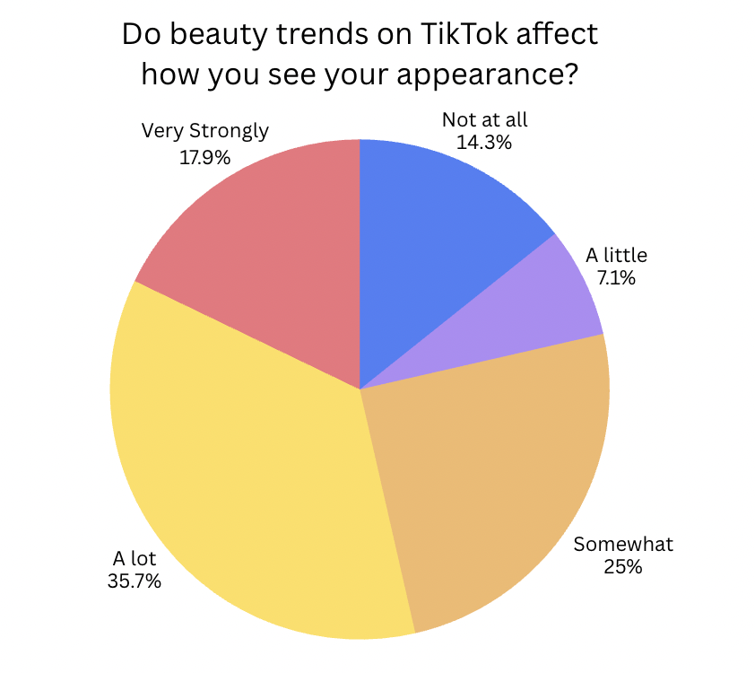
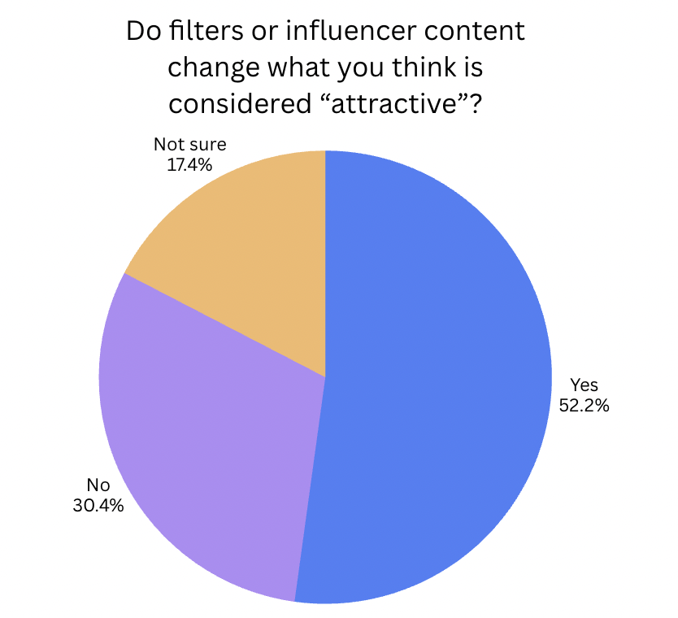

Section 01
Identity & Self-Image
TikTok plays a powerful role in shaping how users see themselves and others by constantly promoting certain beauty trends, lifestyles, and aesthetic standards. Because the algorithm repeatedly shows content based on engagement, users are often exposed to similar images of what is considered “attractive,” successful, or desirable. Over time, this repeated exposure can influence self-image, confidence, and identity, especially for younger audiences who are still developing their sense of self.
Key Idea
Main Takeaway
TikTok’s algorithm does more than recommend entertaining videos, it shapes how users understand themselves by repeatedly promoting certain beauty ideals and lifestyles. Because these images appear so often, they can begin to feel normal or expected, influencing how people compare themselves to others and form their own sense of identity.
Main Discussion
Core Points
Beauty Trends
Beauty trends on TikTok play a major role in shaping how users think about their appearance and identity. Because the platform’s algorithm repeatedly promotes certain facial features, body types, and styles, these looks can begin to feel like the standard for what is considered attractive or desirable. Trends such as “clean girl” aesthetics, skincare routines, and makeup transformations often encourage users to compare themselves to influencers and viral creators. Over time, this constant exposure can affect confidence and influence how people present themselves both online and offline.
Filters
Beauty filters on TikTok play a significant role in shaping how users view their appearance and identity by subtly altering facial features to match popular beauty standards. Many filters smooth skin, reshape facial structure, enlarge eyes, or slim noses and jawlines, creating an idealized version of how users might look. Because these edited images appear so frequently on the platform, they can make unrealistic features feel normal or expected. Over time, this can increase comparison with others and affect confidence, especially when users begin to measure their real appearance against filtered versions of themselves.
Influencers
Influencers on TikTok play a major role in shaping how users understand beauty, lifestyle, and identity by presenting curated versions of their daily lives and appearances. Because influencers often set trends and model what is considered attractive, successful, or relatable, their content can strongly affect how viewers compare themselves to others. When users repeatedly see creators promoting certain routines, products, or aesthetics, these behaviors can begin to feel like expectations rather than choices.
Viral Aesthetics
An article from NBC News reports on a study examining how TikTok affects women’s body image and found that even brief exposure to appearance-focused content can have measurable effects. The study showed that, "the women surveyed had a negative body reaction after as little as 10 minutes viewing content on TikTok"(Rosenblatt 2024, P2), especially those related to beauty ideals and body comparison. This finding suggests that repeated exposure to curated and filtered content can quickly shape how users evaluate their own appearance, reinforcing narrow standards of attractiveness. As a result, TikTok’s algorithm does not simply reflect existing beauty norms, it actively strengthens and spreads them, influencing how users think about their bodies and their sense of self in digital spaces.
Evidence
Survey Results

These survey results support the idea that TikTok beauty trends influence how users see themselves, with over half of respondents reporting that trends affect their appearance either somewhat, a lot, or very strongly. Only a small portion said TikTok had little or no effect. This suggests that repeated exposure to beauty content on the platform plays a meaningful role in shaping users’ self-image and perceptions of attractiveness in digital culture.

These survey results further support the argument that TikTok influences users’ perceptions of attractiveness, with over half of respondents reporting that filters and influencer content change what they consider attractive. Compared to those who said no, a significantly larger portion recognized this influence, suggesting that algorithm-driven visuals and curated creator content help shape modern beauty standards and expectations in digital culture.
Why It Matters
Importance
Understanding how TikTok shapes beauty standards and self-image matters because the platform influences how millions of people see themselves every day. Research and survey responses from this project show that beauty trends, filters, and influencer content actively shape how users define attractiveness and evaluate their own appearance. When users are repeatedly exposed to filtered faces, curated lifestyles, and viral aesthetics, these images can begin to feel like normal expectations rather than edited content. This can affect confidence, identity development, and decision-making, especially for teenagers and young adults who are still forming their sense of self. By recognizing how the algorithm shapes what we see, users can become more aware of its influence and make more intentional choices about how they engage with digital culture.
Next Step
Continue Exploring
Section 02
Consumerism
How TikTok influences products, trends, and buying behavior.
Section 03
Politics
How TikTok shapes awareness and public opinion.
Section 04
Subcultures
How TikTok fosters the creation and spread of online communities and subcultures.
Section 05
Parasocial
How TikTok’s creator culture builds emotional connections with audiences.
Section 06
Reflection
A reflection on the research process, findings, and future questions about TikTok’s cultural impact.
Section 07
Sources
A list of all the sources cited in this project.
Navigation